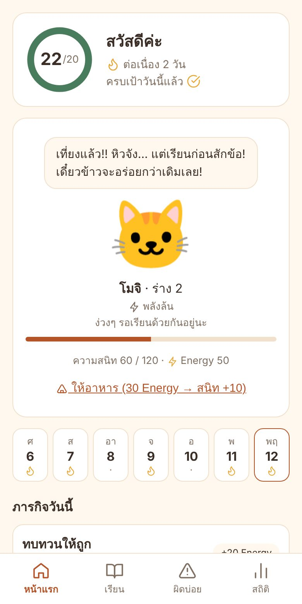
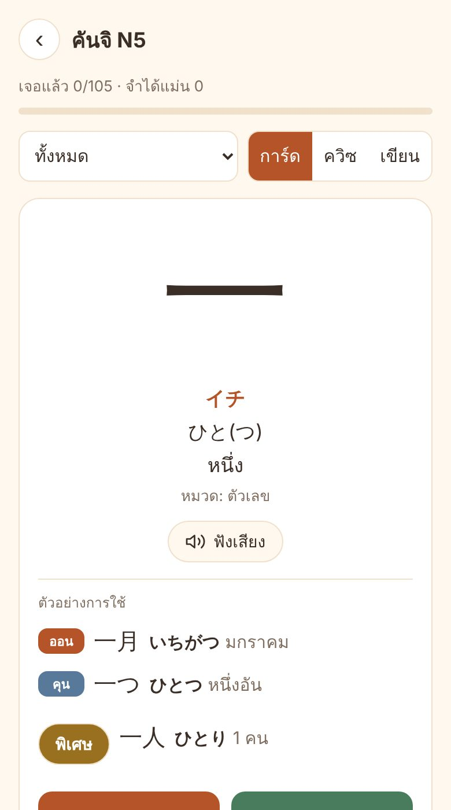
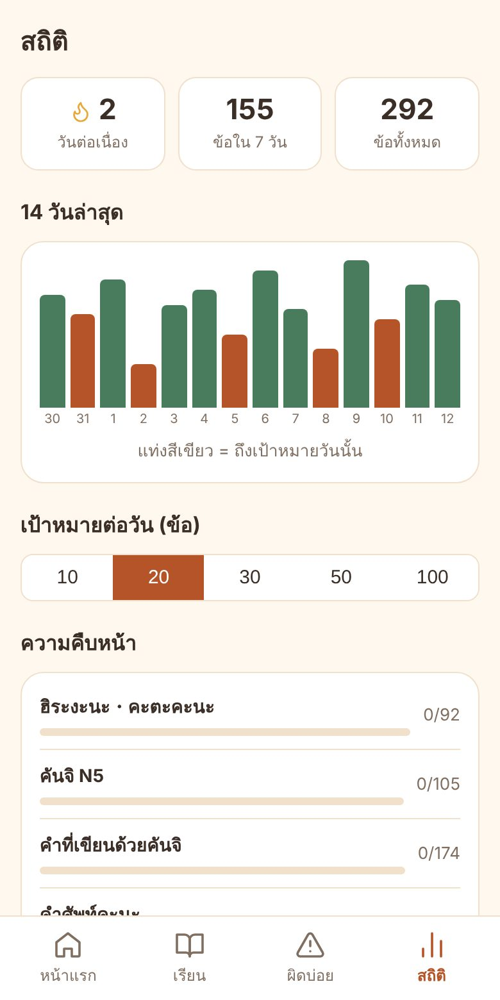

มีอะไรให้เรียนบ้าง
คานะฮิระงะนะและคะตะคะนะ พร้อมตาราง เคล็ดจำ และเสียงอ่าน
คันจิ N5 105 ตัวคำอ่านออน-คุน ความหมาย และตัวอย่างคำที่ใช้จริง
คำศัพท์ 422 คำคำที่เขียนด้วยคันจิและคำศัพท์คะนะ เขียนขึ้นเองสำหรับแอปนี้
บทสนทนา 20 บทชีวิตประจำวัน ทั้งแบบสุภาพและแบบกันเอง สลับฟุริงะนะได้
ไวยากรณ์ 11 บทです ตัวช่วย กริยา ます い/な-adjective て-form พร้อมแบบฝึกหัด
3 โหมดฝึกการ์ด ควิซ และฝึกเขียนตามลำดับขีด รองรับ Apple Pencil
ออกแบบมาให้เรียนได้ยาว ๆ
ทบทวนแบบเว้นระยะตอบถูกต่อเนื่อง ข้อนั้นจะห่างออกไปถึง 150 วัน ตอบผิดจะกลับมาเร็วขึ้น ไม่ต้องจดว่าต้องทวนอะไร
เพื่อนสัตว์เลี้ยงเลือกเพื่อน ตั้งชื่อ มี 10 นิสัย ภารกิจรายวัน และยิ่งเรียนยิ่งสนิท
เป้าหมายและสถิติตั้งเป้าต่อวัน ดูความต่อเนื่อง และกราฟ 14 วันล่าสุด
ใช้ออฟไลน์ได้เพิ่มลงหน้าจอโฮมแล้วเปิดเหมือนแอปจริง ไม่มีเน็ตก็เรียนได้
หน้าตาของแอป

หน้าแรกและเพื่อนสัตว์เลี้ยง

การ์ดคันจิพร้อมตัวอย่างคำ

สถิติและความคืบหน้า
เพิ่มลงหน้าจอโฮม iPad / iPhone
- เปิดลิงก์นี้ใน Safari
- กดปุ่มแชร์ แล้วเลือก เพิ่มไปยังหน้าจอโฮม
- เปิดจากไอคอนบนหน้าจอโฮม ตั้งค่าเพื่อนสัตว์เลี้ยงครั้งแรกไม่ถึงนาที
คำถามที่พบบ่อย
ฟรีจริงไหม
เนื้อหา N5 ใช้ได้ฟรี ไม่มีโฆษณา ส่วนระดับ N4 และ N3 เป็นเนื้อหาเสียเงินแบบซื้อครั้งเดียว ไม่มีค่ารายเดือน (ราคาเปิดตัว N4 ฿249 · N3 ฿349 ราคาจริงแสดงในแอปก่อนจ่ายทุกครั้ง) จ่ายด้วยบัตรหรือ PromptPay ผ่าน Stripe ซื้อแล้วผูกกับบัญชี ใช้ได้ทุกเครื่องที่เข้าสู่ระบบ และขอคืนเงินได้ภายใน 7 วัน ดู ข้อกำหนดการใช้งาน ข้อ 4
ต้องสมัครบัญชีไหม
ไม่ต้อง ความคืบหน้าเก็บในเครื่องของคุณ จะสมัครบัญชีด้วยอีเมลเมื่ออยากซิงก์ข้ามเครื่องก็ได้ ไม่มีรหัสผ่าน ใช้รหัสที่ส่งทางอีเมล และลบบัญชีเองได้ในแอป
ข้อมูลของฉันถูกใช้ทำอะไร
เก็บเท่าที่จำเป็นต่อการเรียน ไม่ขายข้อมูล ไม่มีตัวติดตามพฤติกรรม อ่านรายละเอียดที่ นโยบายความเป็นส่วนตัว
เรียนจากแอปนี้แล้วสอบ JLPT N5 ผ่านเลยไหม
แอปนี้เป็นตัวช่วยทบทวน ไม่รับรองว่าเนื้อหาตรงกับข้อสอบทุกข้อ แนะนำให้ใช้คู่กับแบบฝึกหัดข้อสอบจริง
ความคืบหน้าจะหายไหม
ความคืบหน้าอยู่ในเบราว์เซอร์ ถ้าล้างข้อมูลเว็บไซต์อาจหายได้ ใช้ปุ่ม "ส่งออก" ในหน้าสถิติสำรองไว้ หรือสมัครบัญชีเพื่อซิงก์ขึ้นคลาวด์